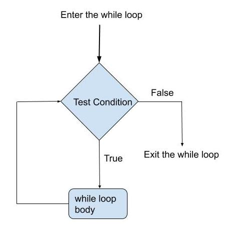

4. If and Loops#
4.1. If condition#
Function if test conditions.
Equals: a == b
Not Equals: a != b
Less than: a < b
Less than or equal to: a <= b
Greater than: a > b
Greater than or equal to: a >= b

4.1.1. The structure of the code#
if test expresion:Code to excute
The function if tests the veracity of a logic expression. The result of test statement should be a boolean. In other words, the output of the test statemen must be True or False. To sum, any function that its output is boolean can be used as a test expression in the if function.
Examples#
import numpy as np
import pandas as pd
A = 30
B = 20
result = A > B
result
True
A = 20
B = 30
A == B
False
result = A == B
print( f' Is A greater than B?: \t{result}') # f'' help us to use numeric variables in strings
Is A greater than B?: False
jose = 2017
bianca = 2018
jose == bianca
False
if jose == bianca:
print("jose is not equal to bianca")
# A = 20
# B = 30
if A != B:
print( 'A is not equal B' )
A is not equal B
A = 2012
B = 2015
result = A == B
print( f'result A == B: \t{result}\n')
result = A != B
print( f'result A != B: \t{result}\n' )
result = A > B
print( f'result A > B: \t{result}\n')
result A == B: False
result A != B: True
result A > B: False
4.1.2. If condition with more than 1 expression#
We will use elif. This function allows us to add more test expressions.
Code1
elif test expresion2:
Code2
elif test expresion3:
Code3
elif test expresion4:
Code4
elif test expresion5:
Code5
else :
Code6
Python will read the conditions of the test in order.
If Test expression 1 is True, the rest of the test expressions will not be evaluated.
R execute Code2 and will not test the next conditions.
In case no Test expression is True, the Code6 will be excuted.
Examples#
A = 20
B = 30
if A == B:
print( 'Test expresion 1 is True' )
elif A > B:
print( 'Test expresion 2 is True' )
elif A >= B:
print( 'Test expresion 3 is True' )
elif A < B:
print( 'Test expresion 4 is True' )
elif A <= B:
print( 'Test expresion 5 is True' )
else:
print( 'Test expresion 6 is True- "A<=B"' )
Test expresion 4 is True
# A = 20
# B = 30
if A == B:
print ('A is the same as B. Condition 1 is true.')
elif A > B:
print ('A is greater than B. Condition 2 is true.')
elif A >= B:
print ('A is greater than or equal to B. Condition 3 is true.')
elif A < B:
print ('A is less than B. Condition 4 is true.')
elif A <= B:
print ('A is less than or equal to B. Condition 5 is true.')
else:
print ('When neither condition is true, this phrase is printed.')
A is less than B. Condition 4 is true.
4.1.3. Logical Operators #
Three key logical operators: and, or, and not.
A = 20
B = 30
C = 25
if ( A == B ) and ( A < C ):
print ('A is equal to B and less than C. Condition 1 is true.')
elif ( A > B ) or ( A > C ):
print ('A is greater than B or greater than C. Condition 2 is true.')
elif ( B > C ) and ( B > A ):
print ('B is greater than C and greater than A. Condition 3 is true.')
else:
print ('When neither condition is true, this phrase is printed.')
B is greater than C and greater than A. Condition 3 is true.
if not (B> 30):
print ('B is not equal to 30. Condition 1 is true.')
else:
print ('When neither condition is true, this phrase is printed.')
B is not equal to 30. Condition 1 is true.
4.1.4. Python Identity Operators #
These operators help us to compare whether variables refer to the same object. We have is, and is not as identity operators.
C = None
C
if C is None:
print( 'Ohh C is None :(')
Ohh C is None :(
if C is not float:
print( 'C is not a float')
C is not a float
Difference between == and is operator in Python#
== operator compares the values of both the operands and checks for value equality.
is operator checks whether both the operands refer to the same object or not (present in the same memory location).
a = 5
b = 5
a is b
True
a = np.arange(0, 4)
b = np.array( [0, 1 , 2 , 3 ] )
print(a)
print(b)
[0 1 2 3]
[0 1 2 3]
a == b
array([ True, True, True, True])
a is b
False
4.1.5. Final IF condition structure#
The strict way to run the if conditions is as follows:
if condition1 : (Required)
code1
elif condition2 :(Optional)
code2
elif condition3 :(Optional)
code3
elif condition4 :(Optional)
code4
else: (Required)
code5
4.1.6. Python Nested if Statement#
total = 120
country = "AR"
if country == "PE":
if total <= 50:
print("Shipping Cost is $50")
elif total <= 100:
print("Shipping Cost is $25")
elif total <= 150:
print("Shipping Costs $5")
else:
print("FREE")
if country == "AR":
if total <= 50:
print("Shipping Cost is $100")
else:
print("FREE")
FREE
The if function is not only useful with logical expressions, but also with functions whose result is a Boolean (True or False).
For example, the isinstance function evaluates whether a variable is string, bool, int, float and returns a Boolean (True or False) as a result. For more information here.
# The result of isinstance is a Boolean. Then it can be used as a condition in the if function.
isinstance (A, str)
False
A = np.array([3, 4, 5])
type(A)
numpy.ndarray
A = np.array([3, 4, 5])
if isinstance( A, str ):
print( 'A is a string' )
elif isinstance( A, bool ):
print( 'A is a boolean' )
elif isinstance( A, float ):
print( 'A is a float' )
elif isinstance( A, int ):
print( 'A is an integer' )
elif isinstance( A, complex ):
print( 'A is a complex' )
elif isinstance(A, list):
print( 'A is a List' )
elif isinstance(A, dict):
print( 'A is a Dictionary' )
else:
print( 'A is another type of variable')
A is another type of variable
4.2. For Loops#
A for loop is used for iterating over a sequence. It executes a code a definite number of times. It has the following structure:

4.2.1. In numpy#
sequence = np.array( [15, 20, 25, 30 , 35 , 40 , 50 ] )
sequence
array([15, 20, 25, 30, 35, 40, 50])
for number in sequence:
square = number**2
print(square)
225
400
625
900
1225
1600
2500
i = 0
for element in sequence:
print( element )
15
20
25
30
35
40
50
4.2.2. In List#
birthday = [29, 15, 24, 12]
for day in birthday:
result = (day**2) / 20
print(result)
42.05
11.25
28.8
7.2
ages = [ 21, 23, 25, 24, 20]
for age in ages:
print( type(age) )
<class 'int'>
<class 'int'>
<class 'int'>
<class 'int'>
<class 'int'>
class_age = [ [11, 12, 11] , [15, 16, 16] , [17, 17, 18]]
for age in class_age:
print( type(age) )
<class 'list'>
<class 'list'>
<class 'list'>
4.2.3. In Dictionary#
class_1 = { "students" : ['Miguel', 'Anthony', 'Paul', 'Rodrigo', 'Jason'] ,
"age" : [20, 18, 15, 20, 22] }
type(class_1.keys())
dict_keys
# Step 1
class_1["students"]
['Miguel', 'Anthony', 'Paul', 'Rodrigo', 'Jason']
# Step 2
class_1["age"]
[20, 18, 15, 20, 22]
class_1_list = ['students', 'age']
class_1["age"]
[20, 18, 15, 20, 22]
for val in class_1["age"]:
print (val)
20
18
15
20
22
for key in class_1.keys():
for val in class_1[key]:
print (val)
Miguel
Anthony
Paul
Rodrigo
Jason
20
18
15
20
22
for key in class_1.keys():
print(key)
students
age
class_1.keys()
dict_keys(['students', 'age'])
for key in class_1.keys():
print(key)
students
age
for val in class_1["students"]:
print (val)
Miguel
Anthony
Paul
Rodrigo
Jason
for val in class_1["age"]:
print (val)
20
18
15
20
22
class_1[“students”], iteration over each value
class_1[“age”], iteration over each value
class_1.keys()
dict_keys(['students', 'age'])
class_1["age"]
[20, 18, 15, 20, 22]
for key in class_1.keys():
for val in class_1[key]:
print (val)
Miguel
Anthony
Paul
Rodrigo
Jason
20
18
15
20
22
for key in class_1.keys():
print(key)
students
age
class_1.values()
dict_values([['Miguel', 'Anthony', 'Paul', 'Rodrigo', 'Jason'], [20, 18, 15, 20, 22]])
for val in class_1.values():
print( val )
['Miguel', 'Anthony', 'Paul', 'Rodrigo', 'Jason']
[20, 18, 15, 20, 22]
class_1.values()
dict_values([['Miguel', 'Anthony', 'Paul', 'Rodrigo', 'Jason'], [20, 18, 15, 20, 22]])
class_1.items()
dict_items([('students', ['Miguel', 'Anthony', 'Paul', 'Rodrigo', 'Jason']), ('age', [20, 18, 15, 20, 22])])
class_1
{'students': ['Miguel', 'Anthony', 'Paul', 'Rodrigo', 'Jason'],
'age': [20, 18, 15, 20, 22]}
class_1.items()
dict_items([('students', ['Miguel', 'Anthony', 'Paul', 'Rodrigo', 'Jason']), ('age', [20, 18, 15, 20, 22])])
for key, val in class_1.items():
print( key, val )
students
['Miguel', 'Anthony', 'Paul', 'Rodrigo', 'Jason']
age [20, 18, 15, 20, 22]
for key in class_1.keys():
for val in class_1[key]:
print (val)
Miguel
Anthony
Paul
Rodrigo
Jason
20
18
15
20
22
for key, val in class_1.items():
print( key, val )
students ['Miguel', 'Anthony', 'Paul', 'Rodrigo', 'Jason']
age [20, 18, 15, 20, 22]
dict1 = {}
for i in range(5):
dict1[f'random_{i+1}' ] = np.random.rand(3)
dict1
{'random_1': array([0.56569345, 0.56089683, 0.96734706]),
'random_2': array([0.48409933, 0.19934475, 0.76182431]),
'random_3': array([0.75360001, 0.46166346, 0.44059596]),
'random_4': array([0.09959846, 0.51773989, 0.01194521]),
'random_5': array([0.97918817, 0.60708235, 0.46980165])}
4.2.4 For loop using range #
# Class
students = ['Miguel', 'Anthony', 'Paul', 'Rodrigo', 'Jason', 'Yajaira']
# Ages
ages = [20, 18, 15, 20, 22, 25]
for index in range (0, len (students)):
print ( f'{ students[index] } is { ages[index] } years old.' )
Miguel is 20 years old.
Anthony is 18 years old.
Paul is 15 years old.
Rodrigo is 20 years old.
Jason is 22 years old.
Yajaira is 25 years old.
for i, element in enumerate( students ):
print ( f'{ students[i] } is { ages[i] } years old.' )
Miguel is 20 years old.
Anthony is 18 years old.
Paul is 15 years old.
Rodrigo is 20 years old.
Jason is 22 years old.
Yajaira is 25 years old.
for index in range (0, len (students)):
print ( f'{ students[index] } is { ages[index] } years old.' )
Miguel is 20 years old.
Anthony is 18 years old.
Paul is 15 years old.
Rodrigo is 20 years old.
Jason is 22 years old.
Yajaira is 25 years old.
4.2.5. Nested For Loop#
A for loop inside of another for loop.
age_class = [ [11, 12, 11] , [15, 16, 16] , [17, 17, 18]]
age_class
[[11, 12, 11], [15, 16, 16], [17, 17, 18]]
for classs in age_class:
print( classs )
for age in classs:
print( age )
[11, 12, 11]
11
12
11
[15, 16, 16]
15
16
16
[17, 17, 18]
17
17
18
# sequence
students = [ 'Justin' , 'Pogba', 'Paul', 'Carrillo', 'Xavi' ]
# age
gr_age = [ 20, 18, 15, 20, 22]
# Loops
for student, age in zip( students , gr_age ):
print(f'{ student } is { age }')
Justin is 20
Pogba is 18
Paul is 15
Carrillo is 20
Xavi is 22
## Diferent dimmensions
# sequence
students = [ 'Justin' , 'Pogba', 'Paul', 'Carrillo', 'Xavi' ]
# Edades
gr_age = [ 20, 18, 15, 20 ]
for student, age in zip( students , gr_age ):
print(f'{ student } is { age }')
Justin is 20
Pogba is 18
Paul is 15
Carrillo is 20
4.2.6. Iterations over Pandas#
Marine fishing extraction by destination and main species (thousands of tons)
extraction_fish = pd.read_csv( r"..\_data\production_fish.csv" )
extraction_fish.columns
Index(['year', 'Consumo Industrial - Anchoveta',
'Consumo Humano - Congelado - Concha de abanico',
'Consumo Humano - Congelado - Langostino',
'Consumo Humano - Congelado - Merluza',
'Consumo Humano - Congelado - Calamar gigante',
'Consumo Humano - Conservas - Atún',
'Consumo Humano - Conservas - Caballa',
'Consumo Humano - Conservas - Jurel',
'Consumo Humano - Conservas - Sardina',
'Consumo Humano - Fresco - Concha de abanico',
'Consumo Humano - Fresco - Jurel', 'Consumo Humano - Fresco - Liza',
'Consumo Humano - Fresco - Tollo', 'total_production'],
dtype='object')
for index, row in extraction_fish.iloc[ :, 1:-2 ].iterrows():
extraction_fish.at[ index, 'Max_min'] = row.max() - row.min()
extraction_fish.head()
| year | Consumo Industrial - Anchoveta | Consumo Humano - Congelado - Concha de abanico | Consumo Humano - Congelado - Langostino | Consumo Humano - Congelado - Merluza | Consumo Humano - Congelado - Calamar gigante | Consumo Humano - Conservas - Atún | Consumo Humano - Conservas - Caballa | Consumo Humano - Conservas - Jurel | Consumo Humano - Conservas - Sardina | Consumo Humano - Fresco - Concha de abanico | Consumo Humano - Fresco - Jurel | Consumo Humano - Fresco - Liza | Consumo Humano - Fresco - Tollo | total_production | Max_min | |
|---|---|---|---|---|---|---|---|---|---|---|---|---|---|---|---|---|
| 0 | 2005 | 8628.396 | 13.537000 | 9.021000 | 23.279000 | 235.630000 | 9.877000 | 25.711000 | 20.481000 | 0.16500 | 1.843080 | 56.167940 | 5.875600 | 0.430000 | 9030.413620 | 8628.23100 |
| 1 | 2006 | 5891.838 | 14.714000 | 11.295000 | 25.189000 | 365.729000 | 11.336000 | 58.245000 | 122.904000 | 0.04800 | 4.048000 | 136.827000 | 3.166000 | 1.584000 | 6646.923000 | 5891.79000 |
| 2 | 2007 | 6084.713 | 19.937000 | 13.548000 | 28.358488 | 379.556594 | 3.713293 | 26.248739 | 82.910307 | 0.00102 | 4.822991 | 134.887316 | 9.317622 | 2.834958 | 6790.849328 | 6084.71198 |
| 3 | 2008 | 6159.387 | 18.790000 | 12.817000 | 26.348398 | 484.162082 | 3.283711 | 47.694121 | 58.864202 | 0.00000 | 0.828187 | 80.092885 | 14.514054 | 2.933360 | 6909.715000 | 6159.38700 |
| 4 | 2009 | 5828.636 | 24.634372 | 11.877399 | 36.774763 | 355.106589 | 2.017061 | 51.355908 | 14.289041 | 0.00000 | 1.843072 | 47.079175 | 17.311344 | 4.057886 | 6394.982610 | 5828.63600 |
Exercise - Rename Columns#
extraction_fish.head(3)
col_names = extraction_fish.columns.to_list()[ 1:-1 ]
for col in col_names:
extraction_fish[ f'%_{col}' ] = extraction_fish[ f'{col}' ] * 100 / extraction_fish[ 'total_production' ]
extraction_fish.head()
| year | Consumo Industrial - Anchoveta | Consumo Humano - Congelado - Concha de abanico | Consumo Humano - Congelado - Langostino | Consumo Humano - Congelado - Merluza | Consumo Humano - Congelado - Calamar gigante | Consumo Humano - Conservas - Atún | Consumo Humano - Conservas - Caballa | Consumo Humano - Conservas - Jurel | Consumo Humano - Conservas - Sardina | ... | %_Consumo Humano - Congelado - Calamar gigante | %_Consumo Humano - Conservas - Atún | %_Consumo Humano - Conservas - Caballa | %_Consumo Humano - Conservas - Jurel | %_Consumo Humano - Conservas - Sardina | %_Consumo Humano - Fresco - Concha de abanico | %_Consumo Humano - Fresco - Jurel | %_Consumo Humano - Fresco - Liza | %_Consumo Humano - Fresco - Tollo | %_total_production | |
|---|---|---|---|---|---|---|---|---|---|---|---|---|---|---|---|---|---|---|---|---|---|
| 0 | 2005 | 8628.396 | 13.537000 | 9.021000 | 23.279000 | 235.630000 | 9.877000 | 25.711000 | 20.481000 | 0.16500 | ... | 2.609294 | 0.109375 | 0.284716 | 0.226800 | 0.001827 | 0.020410 | 0.621986 | 0.065065 | 0.004762 | 100.0 |
| 1 | 2006 | 5891.838 | 14.714000 | 11.295000 | 25.189000 | 365.729000 | 11.336000 | 58.245000 | 122.904000 | 0.04800 | ... | 5.502230 | 0.170545 | 0.876270 | 1.849036 | 0.000722 | 0.060900 | 2.058501 | 0.047631 | 0.023831 | 100.0 |
| 2 | 2007 | 6084.713 | 19.937000 | 13.548000 | 28.358488 | 379.556594 | 3.713293 | 26.248739 | 82.910307 | 0.00102 | ... | 5.589236 | 0.054681 | 0.386531 | 1.220912 | 0.000015 | 0.071022 | 1.986310 | 0.137208 | 0.041747 | 100.0 |
| 3 | 2008 | 6159.387 | 18.790000 | 12.817000 | 26.348398 | 484.162082 | 3.283711 | 47.694121 | 58.864202 | 0.00000 | ... | 7.006976 | 0.047523 | 0.690247 | 0.851905 | 0.000000 | 0.011986 | 1.159134 | 0.210053 | 0.042453 | 100.0 |
| 4 | 2009 | 5828.636 | 24.634372 | 11.877399 | 36.774763 | 355.106589 | 2.017061 | 51.355908 | 14.289041 | 0.00000 | ... | 5.552894 | 0.031541 | 0.803066 | 0.223441 | 0.000000 | 0.028821 | 0.736189 | 0.270702 | 0.063454 | 100.0 |
5 rows × 30 columns
4.3. Pass, Continue, Break, Try#
Function |
Description |
|---|---|
|
Allows you to handle the condition |
|
The current iteration of the loop will be disrupted, |
|
The loop will exit |
|
This command lets you test a block of code for errors. |
|
An exception is an event, which occurs during |
4.3.1. Pass#
for number in range(10):
print('Number is ' + str(number))
Number is 0
Number is 1
Number is 2
Number is 3
Number is 4
Number is 5
Number is 6
Number is 7
Number is 8
Number is 9
a = 2
if a == 1:
print(a)
prime = [2 , 3, 5, 7]
0,1,2,3,4,5,6,7,8,9
(0, 1, 2, 3, 4, 5, 6, 7, 8, 9)
# This is looking for prime numbers
for number in range(10):
print('Number is ' + str(number))
if (number in prime):
# comment
# pass
print("This is a prime number")
elif number == 3:
#number = number + 1
print( f'This number is {number}' )
else:
#number = number + 2
print('This is not a prime number' , '\n')
print('Out of loop')
Number is 0
This is not a prime number
Number is 1
This is not a prime number
Number is 2
This is a prime number
Number is 3
This is a prime number
Number is 4
This is not a prime number
Number is 5
This is a prime number
Number is 6
This is not a prime number
Number is 7
This is a prime number
Number is 8
This is not a prime number
Number is 9
This is not a prime number
Out of loop
# This is looking for prime numbers
for number in range(10):
print('Number is ' + str(number))
if (number in prime):
# comment
pass
#print("This is a prime number")
elif number == 3:
#number = number + 1
print( f'This number is {number}' )
else:
#number = number + 2
print('This is not a prime number' , '\n')
print('Out of loop')
Number is 0
This is not a prime number
Number is 1
This is not a prime number
Number is 2
Number is 3
Number is 4
This is not a prime number
Number is 5
Number is 6
This is not a prime number
Number is 7
Number is 8
This is not a prime number
Number is 9
This is not a prime number
Out of loop
4.3.2. Continue#
for number in range(10):
print('Number is ' + str(number))
if number == 5:
# comment
continue
elif number == 3:
#number = number + 1
print( f'This number is {number}' )
else:
#number = number + 2
print('Different number than 3 y 5' , '\n')
print('Out of loop')
Number is 0
Different number than 3 y 5
Number is 1
Different number than 3 y 5
Number is 2
Different number than 3 y 5
Number is 3
This number is 3
Number is 4
Different number than 3 y 5
Number is 5
Number is 6
Different number than 3 y 5
Number is 7
Different number than 3 y 5
Number is 8
Different number than 3 y 5
Number is 9
Different number than 3 y 5
Out of loop
# find the even numbers
for i in range(10):
if i % 2 == False:
pass
else:
continue
print("alex")
print(i)
alex
0
alex
2
alex
4
alex
6
alex
8
4.3.3. Break#
for number in range(10):
print('Number is ' + str(number))
if number == 5:
# comment
print( f'This number is {number}' )
elif number == 0:
#number = number + 1
print('This is the output of break.')
break
else:
#number = number + 2
print('Different number =! 3, 5', "\n")
print('Out of loop')
Number is 0
This is the output of break.
Out of loop
for number in range(10):
if number == 5:
# comment
raise Exception('This is the output of exception.')
elif number == 3:
#number = number + 1
print( f'This number is {number}' )
else:
#number = number + 2
print('Different number')
print('Number is ' + str(number))
print('Out of loop')
Different number
Number is 0
Different number
Number is 1
Different number
Number is 2
This number is 3
Number is 3
Different number
Number is 4
---------------------------------------------------------------------------
Exception Traceback (most recent call last)
Cell In[80], line 4
1 for number in range(10):
2 if number == 5:
3 # comment
----> 4 raise Exception('This is the output of exception.')
6 elif number == 3:
7 #number = number + 1
8 print( f'This number is {number}' )
Exception: This is the output of exception.
4.3.4. Try#
Function |
Description |
|---|---|
|
Run a code if an error occurs. |
|
The code will be executed whether there is no error. |
|
The code will be executed |
except: Run a code if an error occurs.
x = 'Hola'
print(x + 4)
---------------------------------------------------------------------------
TypeError Traceback (most recent call last)
C:\Users\ALEXAN~1\AppData\Local\Temp/ipykernel_27236/2244414391.py in <module>
----> 1 print(x + 4)
TypeError: can only concatenate str (not "int") to str
try:
print(x + 4)
except TypeError:
print(5+5)
print("An error tipo TypeError")
except NameError:
print("Variable x is not defined")
except:
print("Something else went wrong")
10
An error tipo TypeError
name = "John"
print(namme)
---------------------------------------------------------------------------
NameError Traceback (most recent call last)
C:\Users\ALEXAN~1\AppData\Local\Temp/ipykernel_27236/2106898200.py in <module>
1 name = "John"
2
----> 3 print(namme)
NameError: name 'namme' is not defined
try:
print(namme)
except TypeError:
print(5+5)
print("An error tipo TypeError")
except NameError:
print("the correct label of the variable is name" )
print("Variable x is not defined")
except:
print("Something else went wrong")
the correct label of the variable is name
Variable x is not defined
try:
print(namme)
# except TypeError:
# print(5+5)
# print("An error tipo TypeError")
# except NameError:
# print("the correct label of the variable is name" )
# print("Variable x is not defined")
except:
print("There is an error")
There is an error
else: The code will be executed whether there is no error.
x = 6
try:
x + 4
except:
print("Something went wrong")
#print( 5 + 4)
else:
print("Nothing went wrong")
try:
print( x + "2")
except:
print("error 2")
Nothing went wrong
error 2
finally: The code will be executed does no matter whether or not the try raises an exception.
x = 6
try:
print(x + 4)
except:
print("Something went wrong")
finally:
print( f'el elemento {x} ya paso por este filtro')
10
el elemento 6 ya paso por este filtro
s = 16
if s:
print(s)
16
4.4. While Loop#
While loop is used to repeat code as long as the condition is true. When the logical expression is false, the code will finish executing. More Info

4.4.1. Structure#
while condition:
code 1
break code
The break code is an expression that allows the logical condition to be false at some point, because if not, the code will continue to execute infinitely.
i = 1
i
1
i += 3
i
4
i = 1
while i < 10:
print(i)
# break code
i += 1
print("now i is ", i)
1
now i is 2
2
now i is 3
3
now i is 4
4
now i is 5
5
now i is 6
6
now i is 7
7
now i is 8
8
now i is 9
9
now i is 10
i = 1
# condition "i < 6"
while i < 6:
print(i)
# break code,
i += 1
# ==> i = i + 1
1
2
3
4
5
Excersice#
Print \(2^n\), but the result is less than 10,000.
x = 2
while x < 10000:
print(x)
#break code
x = 2*x
print("now i is ", x)
2
now i is 4
4
now i is 8
8
now i is 16
16
now i is 32
32
now i is 64
64
now i is 128
128
now i is 256
256
now i is 512
512
now i is 1024
1024
now i is 2048
2048
now i is 4096
4096
now i is 8192
8192
now i is 16384
A teacher has 100 apples for his entire class. The first student took four apples, and the next student always took more apples than the previous one. How many children have apples?
apples = 100
last_st = 4
i = 1
while apples > last_st:
# Code
apples = apples - last_st
last_st += 1
# Break code
i += 1
# What is the format function for
print ( '{} children have apples'.format(i) )
# print ('{} children have apples'.format (i))
2 children have apples
3 children have apples
4 children have apples
5 children have apples
6 children have apples
7 children have apples
8 children have apples
9 children have apples
10 children have apples
11 children have apples
12 children have apples
# string = "the age of anzony"
# anzony_age = 23
# print( 'the age of anzony {}'.format(anzony_age) )
the age of anzony 23
Print all elements of an array.
import numpy as np
edad = np.array([ 3, 6, 7, 10, 15, 17, 18, 31, 26, 88 , 100, 120, 110])
i = 0
while i < edad.size:
print(edad[i])
i += 1
3
6
7
10
15
17
18
31
26
88
100
120
110
While loop Excersice
quarantine_days = 1
stress_level = 2
while quarantine_days <= 40:
print ( f'Quarantine day n° {quarantine_days}. ')
if stress_level> 100:
print (f'Her family let Rebeca out on the day {quarantine_days}.')
stress_level = 1
break
elif quarantine_days <15:
print ("Rebeca watch Love Alarm")
elif (quarantine_days >= 15) & (quarantine_days <20):
print ("Rebeca reads El mundo de Sofia and Cronicas de una muerte anunciada")
elif (quarantine_days >= 20) & (quarantine_days <40):
print ('Rebeca builds her Foundation of Analysis I class')
else:
print ("The lady works out")
print (f'The day number {quarantine_days} of quarantine is over. \n ')
# Days increase
quarantine_days = quarantine_days + 1
stress_level = stress_level * 2
print ("Quarantine is over.")
Quarantine day n° 1.
Rebeca watch Love Alarm
The day number 1 of quarantine is over.
Quarantine day n° 2.
Rebeca watch Love Alarm
The day number 2 of quarantine is over.
Quarantine day n° 3.
Rebeca watch Love Alarm
The day number 3 of quarantine is over.
Quarantine day n° 4.
Rebeca watch Love Alarm
The day number 4 of quarantine is over.
Quarantine day n° 5.
Rebeca watch Love Alarm
The day number 5 of quarantine is over.
Quarantine day n° 6.
Rebeca watch Love Alarm
The day number 6 of quarantine is over.
Quarantine day n° 7.
Her family let Rebeca out on the day 7.
Quarantine is over.
Pandas with While loop
import pandas as pd
data1 = {'names': ['Martins', 'Raul', 'Estremadoyro', "Kante", 'Tigo', 'Betson', 'Finado', 'Alex', 'Miracles', 'Bambi'],
'age': [23, 25, 36, 78, 90, 32, 200, 24, 12, 18]}
people = pd.DataFrame( data = data1)
people
| names | age | |
|---|---|---|
| 0 | Martins | 23 |
| 1 | Raul | 25 |
| 2 | Estremadoyro | 36 |
| 3 | Kante | 78 |
| 4 | Tigo | 90 |
| 5 | Betson | 32 |
| 6 | Finado | 200 |
| 7 | Alex | 24 |
| 8 | Miracles | 12 |
| 9 | Bambi | 18 |
i = 0
# row by row
nrows = people.age.count()
while i < nrows:
if people['age'][i] > 150:
print('Ohhh no a phantom')
break
elif people['age'][i] < 18:
# New column
people.loc[[i], ["pass"]] = "No pass"
else:
people.loc[[i], ["pass"]] = "Pass"
i += 1
Ohhh no a phantom